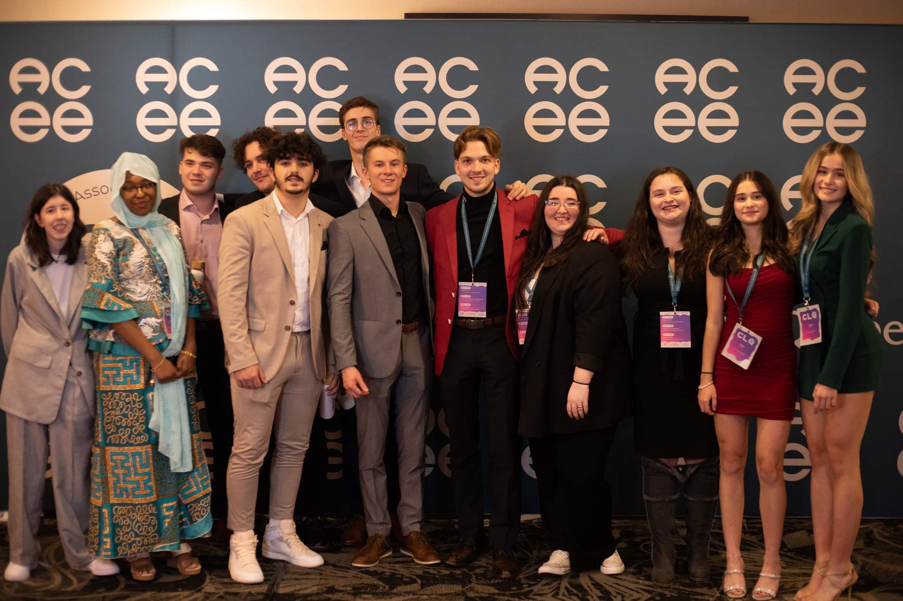
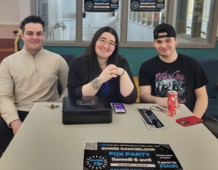
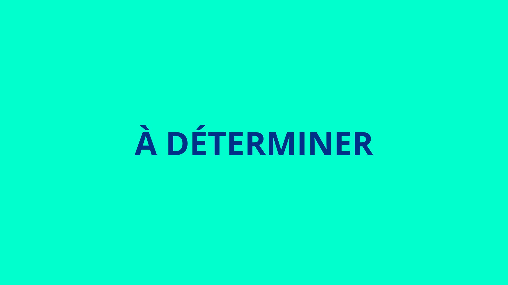

Party fin de session
Le Club Entrepreneur Étudiant Gaspé conclut l’année avec une soirée fin de session, une soirée festive de plaisir, de jeux, de musique et de surprises pour tous.
Gaspé · Gaspésie
Fier membre du réseau de l’Association des clubs d’entrepreneurs étudiants du Québec (ACEE)

Le Club Entrepreneur Étudiant Gaspé conclut l’année avec une soirée fin de session, une soirée festive de plaisir, de jeux, de musique et de surprises pour tous.
Le Club Entrepreneur étudiant Gaspé est une organisation à but non lucratif dédiée à inspirer et à soutenir la prochaine génération d’entrepreneurs dans la région de Gaspé.
Nous sommes des étudiants du Cégep de Gaspé, issus de différents programmes d’études, et nous avons le désir d’en apprendre davantage sur le monde de l’entrepreneuriat.
Nous couvrons principalement la MRC de la Côte-de-Gaspé et aimerions faire affaire avec différentes entreprises prêtes à nous montrer leur savoir-faire.


Le Club Entrepreneur étudiant Gaspé dynamise la communauté locale en organisant une multitude d’activités et d’événements.
Nous proposons une gamme variée de programmes conçus pour soutenir et stimuler l’entrepreneuriat dans notre région.
Que ce soit à travers des ateliers, des conférences inspirantes ou des événements de réseautage, nous sommes déterminés à accompagner et à renforcer l’écosystème entrepreneurial de la MRC de la Côte-de-Gaspé.
Le Club Entrepreneur Étudiant propose une panoplie de programmes et de services visant à divertir la communauté tout en favorisant une meilleure compréhension du monde de l’entrepreneuriat. Nos initiatives incluent des activités ludiques, des ateliers éducatifs et des événements spéciaux conçus pour inspirer, informer et engager les membres de la communauté.

Une passerelle vers la concrétisation des idées les plus audacieuses : projets novateurs, entreprises prometteuses et initiatives à impact social.

La créativité et l'organisation d'événements festifs au sein de la communauté locale, pour renforcer les liens sociaux et culturels.

Développer des compétences entrepreneuriales en restauration : OktoberFest Québécois, vente de popcorn aux soirées d'Improvisation Gaspé.
La conception, le lancement et la gestion de boutiques locales, en mettant l'accent sur le commerce de détail.

Outiller les étudiants avec des compétences essentielles en gestion financière personnelle et fiscale.

Renforcement des compétences, développement du leadership et amélioration de la communication.

Jeux de rôle d'entreprise, simulations de marché et accompagnement pour des simulations boursières comme Bourstad.

La participation et la représentation du CEEG au colloque annuel de l'Association des Clubs Entrepreneurs Étudiants du Québec.
Le Club Entrepreneur Étudiant de Gaspé vous invite à découvrir ses dernières actualités.